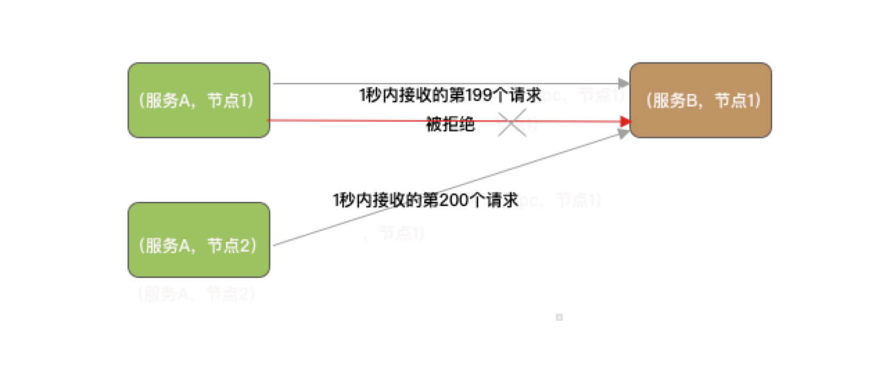
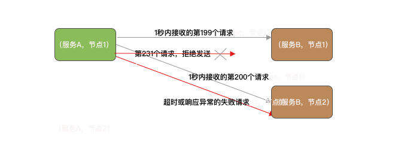

- 01 开篇词：一次服务雪崩问题排查经历.md.html
- 02 为什么需要服务降级以及常见的几种降级方式.md.html
- 03 为什么选择 Sentinel，Sentinel 与 Hystrix 的对比.md.html
- 04 Sentinel 基于滑动窗口的实时指标数据统计.md.html
- 05 Sentinel 的一些概念与核心类介绍.md.html
- 06 Sentinel 中的责任链模式与 Sentinel 的整体工作流程.md.html
- 07 Java SPI 及 SPI 在 Sentinel 中的应用.md.html
- 08 资源指标数据统计的实现全解析（上）.md.html
- 09 资源指标数据统计的实现全解析（下）.md.html
- 10 限流降级与流量效果控制器（上）.md.html
- 11 限流降级与流量效果控制器（中）.md.html
- 12 限流降级与流量效果控制器（下）.md.html
- 13 熔断降级与系统自适应限流.md.html
- 14 黑白名单限流与热点参数限流.md.html
- 15 自定义 ProcessorSlot 实现开关降级.md.html
- 16 Sentinel 动态数据源：规则动态配置.md.html
- 17 Sentinel 主流框架适配.md.html
- 18 Sentinel 集群限流的实现（上）.md.html
- 19 Sentinel 集群限流的实现（下）.md.html
- 20 结束语：Sentinel 对应用的性能影响如何？.md.html
- 21 番外篇：Sentinel 1.8.0 熔断降级新特性解读.md.html
02 为什么需要服务降级以及常见的几种降级方式
为什么需要服务降级，常见的降级方式有哪些？
上一篇笔者跟大家分享了一个真实的服务雪崩的故事，也分析了造成服务雪崩的真正原因，那么，如何才能避免服务雪崩的出现呢？我知道你会说：增加硬件，没有什么是钱解决不了的。注意，是避免，在有限的硬件条件下，避免流量突增导致服务雪崩。最好方案应该就是服务降级，处理不过来就不处理了呗。
当服务 B 业务线程池全部用满的状态时，应该拒绝服务 A 的请求（这一点 Dubbo 就做得很好了），保护自己，不被服务 A 拖垮；服务 A 在服务 B 多次拒绝请求的情况下不应该再向服务 B 发送请求，懂得体量它人，不连累它人；服务 A 在请求大量堆积的情况下，也应该拒绝客户端的请求，而不是继续堆积请求，请求处理不过来，堆积再多也没有任何意义。这些便是我们要讨论的服务降级。
服务降级是服务自我保护的一种方式，或者保护下游服务的一种方式，用于确保服务不会受请求突增影响变得不可用，至少确保服务不会奔溃。常见的服务降级实现方式有：开关降级、限流降级、熔断降级。
限流降级
假设服务 A 需要依赖服务 B 完成客户端的一次请求，那么服务 B 可以通过压测方式预测单节点所能处理的最大并发请求数，只要最大并发数不超过自己的极限服务就能稳定运行。限制服务 B 处理最大并发请求就是限流，例如限制每秒只处理 200 个请求，超出的请求采取流量控制策略处理，或直接拒绝或排队等待，这便是限流降级。

限流不仅可以限制单个节点的流量，还可限制发往一个服务集群的流量，即对一个服务集群限流。不过集群限流方式实现上需要合计单位时间内该集群的流量。
流量控制除了直接拒绝外，还可以采取一些策略尽可能处理更多的请求，例如均速排队，这种方式主要用于处理间隔性突发的流量，例如在某一秒有大量的请求到来，而接下来的几秒都处于空闲状态，我们希望系统能够在接下来的空闲期间逐渐处理这些请求，而不是在第一秒直接拒绝多余的请求。
如果限流用在电商的下单场景会有什么影响？一但限流就会有很多的用户下单失败，这意味着收益的流失，老板宁愿多花点钱搞多几台服务器，也不愿看到用户想买东西都买不了的情况。所以限流降级不是解决这种问题的有效手段，这种情况还是需要通过集群自动伸缩去解决。那限流降级适合哪些场景？笔者认为秒杀场景最合适不过，抢到商品的都是有效流量，抢不到商品的都是无效流量，对于无效流量我们可以采用直接拒绝或者匀速排队的流量控制策略。
熔断降级
假设服务 A 需要依赖服务 B 完成客户端的一次请求，服务 A 如果能够感知到服务 B 的状态，在服务 B“不行”的时候不再去请求服务 B，就能确保服务 A 自身不会受服务 B 的影响。
那么如何知道服务 B 到底行不行呢？假设一秒内向服务 b 发送 230 个请求，结果有 30 个请求或超时异常或响应异常，根据这个数字就可以预测后续请求服务 B 大概率也会响应异常。服务 B 已经处理不过来了，那么后续的请求就没有必要再发送了，反正发出去也是异常，不如直接放弃。

当服务 A 的下游服务 B 突然变得不可用或者不稳定时，服务 A 可以自动切断与服务 B 的交互从而保证自己可用，就像保险丝一样，当电流异常升高到一定高度的时候，保险丝切断电流，这就是熔断降级。
但是服务 B 不会一直不行，当服务 B 恢复之后服务 A 也应该能感知到才行，所以熔断需要以一个时长为周期，比如 1 秒，这个周期也称为时间窗口，每个时间窗口都重新计算请求总数、异常总数这些指标数据，这样就能实现自动恢复。
熔断降级不是只能由“别人”来实现，自己也可以实现。别人发现你的缺点可能会疏远你，对你印象不好，实际上我们自己也能够发现自己的缺点，当自己发现自己缺点时可以及时弥补这一缺点，避免给别人不好印象。熔断降级也是如此，服务提供者也能自己统计接口的处理情况，当发现请求处理不过来时，触发熔断拒绝上游的请求，如果可以自己自动伸缩就更好了。所以，熔断降级可以在消费端实现，也可以在提供端实现。如果对接的是第三方的接口，那么就只能是在消费端实现。Sentinel 支持的系统负载保护也算是一种熔断降级方式。
熔断降级的常见降级策略：
- 在每秒请求异常数超过多少时触发熔断降级
- 在每秒请求异常错误率超过多少时触发熔断降级
- 在每秒请求平均耗时超过多少时触发熔断降级
响应异常数越多或者异常比率越大、平均耗时越高，都说明服务的处理能力在下降。
开关降级
开关降级也是服务降级的一种实现方式。开关降级用于在有限的硬件条件下，提升系统核心功能的并发处理能力，以最少的硬件成本应对流量高峰。
做电商项目的朋友可能接触最多的就是开关降级，一般我们在搞大促之前，都会通过开关方式将一些无关紧要的业务接口变成“不可用”。例如，通过配置中心或者通过 Redis 控制服务降级开关，当开关打开时，需要降级的接口直接响应一个表示当前服务降级的状态码给调用者。
控制服务降级开关的方式可以是人工，也可以是定时任务在某个时段开启、某个时段关闭。定时任务控制开关方式适合固定时间段请求突增的场景，例如点外卖的高峰期在中午，那么就可以在 11 点左右打开开关，在 13 点半之后关闭开关。
总结
服务降级只是为了保障服务能够稳定运行，应对流量突增用降级牺牲一些流量换取系统的稳定。
限流降级与熔断降级都可以实现在消费端限流或者服务端限流，限流可以采取流量控制策略处理超过阈值的流量。
限流降级即便没有达到系统的瓶颈，只要流量达到设定的阈值超出部分就会触发限流降级，而熔断降级可以实现尽最大的可能去完成所有的请求，容忍一些失败，熔断降级也能自动恢复。
开关降级适用于促销活动这种可以明确预估到并发会突增的场景。